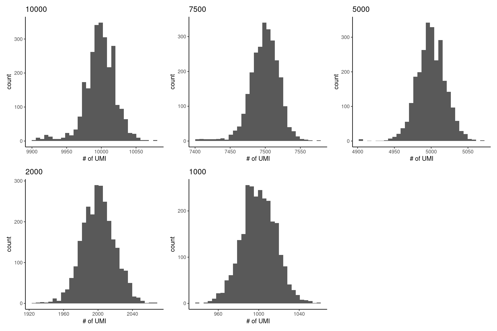
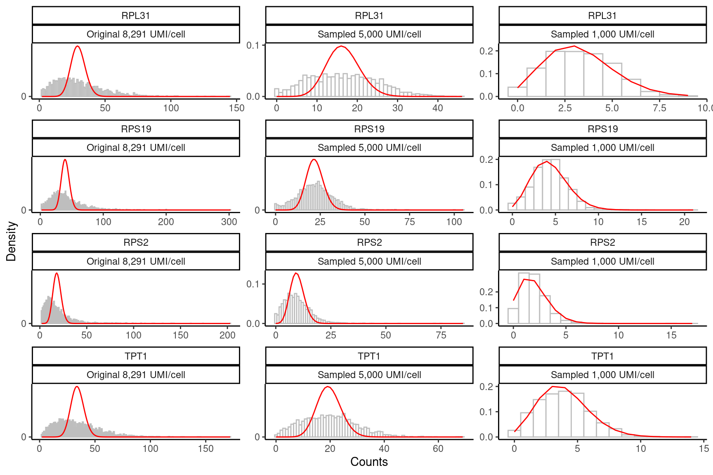

Last updated: 2021-07-06
Checks: 6 1
Knit directory: scRNA_NB_comparison/
This reproducible R Markdown analysis was created with workflowr (version 1.6.2). The Checks tab describes the reproducibility checks that were applied when the results were created. The Past versions tab lists the development history.
The R Markdown is untracked by Git. To know which version of the R Markdown file created these results, you’ll want to first commit it to the Git repo. If you’re still working on the analysis, you can ignore this warning. When you’re finished, you can run wflow_publish to commit the R Markdown file and build the HTML.
Great job! The global environment was empty. Objects defined in the global environment can affect the analysis in your R Markdown file in unknown ways. For reproduciblity it’s best to always run the code in an empty environment.
The command set.seed(20210706) was run prior to running the code in the R Markdown file. Setting a seed ensures that any results that rely on randomness, e.g. subsampling or permutations, are reproducible.
Great job! Recording the operating system, R version, and package versions is critical for reproducibility.
Nice! There were no cached chunks for this analysis, so you can be confident that you successfully produced the results during this run.
Great job! Using relative paths to the files within your workflowr project makes it easier to run your code on other machines.
Great! You are using Git for version control. Tracking code development and connecting the code version to the results is critical for reproducibility.
The results in this page were generated with repository version e0b7c2c. See the Past versions tab to see a history of the changes made to the R Markdown and HTML files.
Note that you need to be careful to ensure that all relevant files for the analysis have been committed to Git prior to generating the results (you can use wflow_publish or wflow_git_commit). workflowr only checks the R Markdown file, but you know if there are other scripts or data files that it depends on. Below is the status of the Git repository when the results were generated:
Ignored files:
Ignored: data/raw_data/
Ignored: data/rds_filtered/
Ignored: data/rds_raw/
Ignored: output/snakemake_output/
Untracked files:
Untracked: analysis/01_Smart-seq3.Rmd
Untracked: analysis/02_Mereu.Rmd
Untracked: analysis/03A_Ding-Mixture-HEK-3T3.Rmd
Untracked: analysis/03B_Ding-PBMC.Rmd
Untracked: analysis/03C_Ding-Cortex.Rmd
Untracked: analysis/04_PBMC68k.Rmd
Untracked: analysis/05_Fetal-sciRNAseq3.Rmd
Untracked: analysis/06G_VS2020_Seurat.Rmd
Untracked: analysis/07_Filter_all_datasets.Rmd
Untracked: analysis/08_Downsample_PBMC__Smart-seq3.Rmd
Untracked: analysis/09_Figure1.Rmd
Untracked: analysis/10_Figure2.Rmd
Untracked: analysis/11_Figure3.Rmd
Untracked: analysis/12_SuppFigure-DataStats.Rmd
Untracked: analysis/13_SuppFigure-VST.Rmd
Untracked: analysis/14_SuppFigure-Simulation.Rmd
Untracked: analysis/15_SuppFigure-Upsampling.Rmd
Untracked: data/datasets.csv
Unstaged changes:
Modified: .gitignore
Modified: analysis/_site.yml
Modified: analysis/about.Rmd
Modified: analysis/index.Rmd
Modified: analysis/license.Rmd
Note that any generated files, e.g. HTML, png, CSS, etc., are not included in this status report because it is ok for generated content to have uncommitted changes.
There are no past versions. Publish this analysis with wflow_publish() to start tracking its development.
set.seed(42)
sample_name <- "PBMC__Smart-seq3"
object <- readRDS(here::here("data", "rds_filtered", paste0(sample_name, ".rds")))
counts <- GetAssayData(object, assay = "RNA", slot = "counts")
counts_totalumis <- colSums2(counts)
dim(object)[1] 30783 2629hist(counts_totalumis)sampled_counts <- list()
set.seed(42)
sampled_counts[["Full"]] <- counts
downsampled_umis <- c(10000, 7500, 5000,
2000, 1000)
names(downsampled_umis) <- as.character(downsampled_umis)
for (umi in downsampled_umis) {
sampled_counts[[as.character(umi)]] <- SampleUMI(counts, max.umi = umi, upsample = F)
}
libsize_sampled <- lapply(sampled_counts, colSums2)
libsize_sampled_df <- as.data.frame(do.call(cbind, libsize_sampled))plots <- list()
colnames(libsize_sampled_df) <- paste0("U", colnames(libsize_sampled_df))
for (name in colnames(libsize_sampled_df)) {
plots[[name]] <- ggplot(libsize_sampled_df, aes_string(name)) +
geom_histogram() +
ggtitle(gsub("U", "", name)) +
xlab("# of UMI")
}
wrap_plots(plots, ncol = 3)sampled_counts_filtered <- list()
for (target_umi in downsampled_umis) {
umi_dist <- libsize_sampled[[as.character(target_umi)]]
sc <- sampled_counts[[as.character(target_umi)]]
sampled_counts_filtered[[as.character(target_umi)]] <- sc[, (umi_dist > target_umi - 100) & (umi_dist < target_umi + 100)]
print(dim(sampled_counts_filtered[[as.character(target_umi)]]) )
}[1] 30783 792
[1] 30783 1675
[1] 30783 2451
[1] 30783 2629
[1] 30783 2629libsize_sampled_filtered <- lapply(sampled_counts_filtered, colSums2)
libsize_sampled_filtered_df <- as.data.frame(do.call(cbind, libsize_sampled_filtered))
plots <- list()
colnames(libsize_sampled_filtered_df) <- paste0("U", colnames(libsize_sampled_filtered_df))
for (name in colnames(libsize_sampled_filtered_df)) {
plots[[name]] <- ggplot(libsize_sampled_filtered_df, aes_string(name)) +
geom_histogram() +
ggtitle(gsub("U", "", name)) +
xlab("# of UMI")
}
wrap_plots(plots, ncol = 3)
MeanVarPlot <- function(cm){
mean <- rowMeans(cm)
variance <- rowVars(cm)
df <- data.frame(mean=mean, variance=variance)
p <- ggplot(df, aes(mean, variance)) + geom_point(alpha=0.5) + geom_abline() + scale_x_log10() + scale_y_log10()
p
}
for (umi in downsampled_umis) {
p <- MeanVarPlot(sampled_counts[[as.character(umi)]]) + ggtitle(umi)
print(p)
}Warning: Transformation introduced infinite values in continuous x-axisWarning: Transformation introduced infinite values in continuous y-axisWarning: Transformation introduced infinite values in continuous x-axis
Warning: Transformation introduced infinite values in continuous y-axisWarning: Transformation introduced infinite values in continuous x-axis
Warning: Transformation introduced infinite values in continuous y-axisWarning: Transformation introduced infinite values in continuous x-axis
Warning: Transformation introduced infinite values in continuous y-axisWarning: Transformation introduced infinite values in continuous x-axis
Warning: Transformation introduced infinite values in continuous y-axisgenerated_poissons <- list()
goi <- c("Rps5", "Rpl4")
names(goi) <- goi
goi <- c("RPS2", "RPS19", "TPT1", "RPL31" )
names(goi) <- goi
PredictPoisson <- function(counts_df) {
predicted_poisson <- dpois(counts_df$counts, lambda = mean(counts_df$counts))
return(predicted_poisson)
}
for (gene_name in names(goi)) {
gene <- goi[[gene_name]]
counts_goi_full <- counts[gene, ]
counts_goi_full_subset <- counts_goi_full[counts_goi_full>1]
counts_goi_5k <- sampled_counts_filtered[["5000"]][gene, ]
counts_goi_1k <- sampled_counts_filtered[["1000"]][gene, ]
counts_df_full <- data.frame(counts = counts_goi_full_subset)
counts_df_5k <- data.frame(counts = counts_goi_5k)
counts_df_1k <- data.frame(counts = counts_goi_1k)
labels <- c("Original 8,291 UMI/cell", "Sampled 5,000 UMI/cell", "Sampled 1,000 UMI/cell")
counts_df_full$predicted_poisson <- PredictPoisson(counts_df_full)
counts_df_full$sampletype <- labels[1]
counts_df_5k$predicted_poisson <- PredictPoisson(counts_df_5k)
counts_df_5k$sampletype <- labels[2]
counts_df_1k$predicted_poisson <- PredictPoisson(counts_df_1k)
counts_df_1k$sampletype <- labels[3]
merged_counts <- rbind(counts_df_full, counts_df_5k, counts_df_1k)
merged_counts$sampletype <- factor(merged_counts$sampletype, levels = labels)
generated_poissons[[gene_name]] <- merged_counts
}
generated_poissons_df <- bind_rows(generated_poissons, .id = "gene")
plot.genespois <- ggplot(generated_poissons_df, aes(x = counts)) +
geom_histogram(aes(y = ..density..), binwidth = 1, colour = "gray", fill = "white") +
geom_line(aes(counts, predicted_poisson), color = "red") +
facet_wrap(gene ~ sampletype, ncol=3, scales = "free") +
xlab("Counts") +
ylab("Density") +
scale_y_continuous(breaks = c(0.00, 0.10, 0.20))
plot.genespois
dataset_keys <- c()
for (name in names(sampled_counts_filtered)) {
seu <- CreateSeuratObject(sampled_counts_filtered[[name]], project = paste0(sample_name, "_sampled_", name))
dir.create(here::here("data", "sampled_counts", paste0(sample_name, "_sampled_counts")), showWarnings = F,recursive = T)
xdir <- here::here("data", "sampled_counts", paste0(sample_name, "_sampled_counts"))
saveRDS(seu, here::here(xdir, paste0(sample_name, "_sampled_", name, ".rds")))
}
sessionInfo()R version 4.0.0 (2020-04-24)
Platform: x86_64-pc-linux-gnu (64-bit)
Running under: Ubuntu 18.04.5 LTS
Matrix products: default
BLAS: /usr/lib/x86_64-linux-gnu/blas/libblas.so.3.7.1
LAPACK: /usr/lib/x86_64-linux-gnu/lapack/liblapack.so.3.7.1
locale:
[1] LC_CTYPE=en_US.UTF-8 LC_NUMERIC=C
[3] LC_TIME=en_US.UTF-8 LC_COLLATE=en_US.UTF-8
[5] LC_MONETARY=en_US.UTF-8 LC_MESSAGES=en_US.UTF-8
[7] LC_PAPER=en_US.UTF-8 LC_NAME=C
[9] LC_ADDRESS=C LC_TELEPHONE=C
[11] LC_MEASUREMENT=en_US.UTF-8 LC_IDENTIFICATION=C
attached base packages:
[1] stats graphics grDevices utils datasets methods base
other attached packages:
[1] sparseMatrixStats_1.2.1 MatrixGenerics_1.2.1 matrixStats_0.59.0
[4] patchwork_1.1.1 ggplot2_3.3.5 SeuratObject_4.0.2
[7] Seurat_4.0.3 dplyr_1.0.7 workflowr_1.6.2
loaded via a namespace (and not attached):
[1] Rtsne_0.15 colorspace_2.0-2 deldir_0.2-10
[4] ellipsis_0.3.2 ggridges_0.5.3 rprojroot_2.0.2
[7] fs_1.5.0 spatstat.data_2.1-0 farver_2.1.0
[10] leiden_0.3.8 listenv_0.8.0 ggrepel_0.9.1
[13] fansi_0.5.0 codetools_0.2-16 splines_4.0.0
[16] knitr_1.33 polyclip_1.10-0 jsonlite_1.7.2
[19] ica_1.0-2 cluster_2.1.0 png_0.1-7
[22] uwot_0.1.10 shiny_1.6.0 sctransform_0.3.2.9008
[25] spatstat.sparse_2.0-0 compiler_4.0.0 httr_1.4.2
[28] assertthat_0.2.1 Matrix_1.3-4 fastmap_1.1.0
[31] lazyeval_0.2.2 later_1.2.0 htmltools_0.5.1.1
[34] tools_4.0.0 igraph_1.2.6 gtable_0.3.0
[37] glue_1.4.2 RANN_2.6.1 reshape2_1.4.4
[40] Rcpp_1.0.6 scattermore_0.7 jquerylib_0.1.4
[43] vctrs_0.3.8 nlme_3.1-152 lmtest_0.9-38
[46] xfun_0.24 stringr_1.4.0 globals_0.14.0
[49] mime_0.11 miniUI_0.1.1.1 lifecycle_1.0.0
[52] irlba_2.3.3 goftest_1.2-2 future_1.21.0
[55] MASS_7.3-51.6 zoo_1.8-9 scales_1.1.1
[58] spatstat.core_2.2-0 promises_1.2.0.1 spatstat.utils_2.2-0
[61] parallel_4.0.0 RColorBrewer_1.1-2 yaml_2.2.1
[64] reticulate_1.20 pbapply_1.4-3 gridExtra_2.3
[67] sass_0.4.0 rpart_4.1-15 stringi_1.6.2
[70] highr_0.8 rlang_0.4.11 pkgconfig_2.0.3
[73] evaluate_0.14 lattice_0.20-41 ROCR_1.0-11
[76] purrr_0.3.4 tensor_1.5 labeling_0.4.2
[79] htmlwidgets_1.5.3 cowplot_1.1.1 tidyselect_1.1.1
[82] here_1.0.1 parallelly_1.26.0 RcppAnnoy_0.0.18
[85] plyr_1.8.6 magrittr_2.0.1 R6_2.5.0
[88] generics_0.1.0 DBI_1.1.1 withr_2.4.2
[91] pillar_1.6.1 mgcv_1.8-33 fitdistrplus_1.1-5
[94] survival_3.2-7 abind_1.4-5 tibble_3.1.2
[97] future.apply_1.7.0 crayon_1.4.1 KernSmooth_2.23-17
[100] utf8_1.2.1 spatstat.geom_2.2-0 plotly_4.9.4.1
[103] rmarkdown_2.9 grid_4.0.0 data.table_1.14.0
[106] git2r_0.26.1 digest_0.6.27 xtable_1.8-4
[109] tidyr_1.1.3 httpuv_1.6.1 munsell_0.5.0
[112] viridisLite_0.4.0 bslib_0.2.5.1